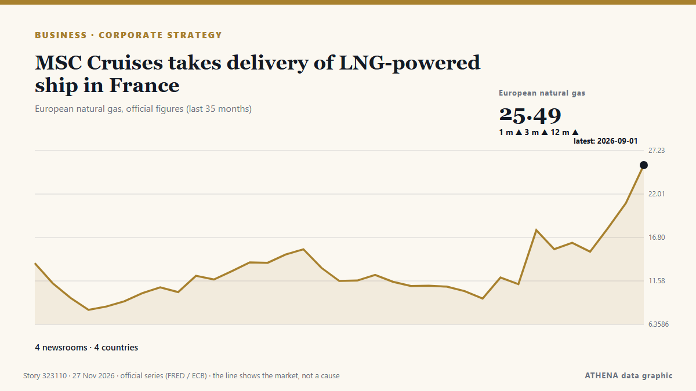

Επιχειρήσεις, Εταιρείες & Επενδύσεις
ΧορηγούμενοΠαρουσιάζεται από  Cybernetics and Artificial Intelligence Lab Welcome to the Cybernetics and Artificial Intelligence Laboratory, established at the Department of Business Administration of the National and Kapodistrian University of Athens. The lab is headed by Professor Dimitrios Thomakos. The lab aims to do research that can be published in top venues. Our research uses tools and methods of Artificial Intelligence, and lies in the following areas: - Forecasting - Decision making - Cyber security - Finance We are always looking forward to collaborating with exceptional students!
Cybernetics and Artificial Intelligence Lab Welcome to the Cybernetics and Artificial Intelligence Laboratory, established at the Department of Business Administration of the National and Kapodistrian University of Athens. The lab is headed by Professor Dimitrios Thomakos. The lab aims to do research that can be published in top venues. Our research uses tools and methods of Artificial Intelligence, and lies in the following areas: - Forecasting - Decision making - Cyber security - Finance We are always looking forward to collaborating with exceptional students!
Οι τίτλοι των ειδήσεων παρουσιάζονται στα αγγλικά, όπως δημοσιεύτηκαν.

Εταιρική στρατηγικήMSC Cruises takes delivery of LNG-powered ship in France
MSC’s cruise division has taken delivery of LNG-powered MSC World Asia from France’s Chantiers de l’Atlantique. από LNG Prime
| 14 Νοε | 38 |
|---|---|
| 15 Νοε | 36 |
| 16 Νοε | 99 |
| 17 Νοε | 88 |
| 18 Νοε | 88 |
| 19 Νοε | 86 |
| 20 Νοε | 64 |
| 21 Νοε | 40 |
| 22 Νοε | 39 |
| 23 Νοε | 78 |
| 24 Νοε | 91 |
| 25 Νοε | 82 |
| 26 Νοε | 56 |
| 27 Νοε | 1 |
U.S.-led consortium agrees to acquire Lukoil's international portfolio in share-swap deal
An Eldridge-led consortium that includes the U.S. από World Oil
Before the Sell-Off, AI Stocks Showed Dot-Com-Level Bubble Signals: Study
A study of 170 years of financial journalism suggests AI stocks rivaled dot-com bubble levels, but estimates vary. από Decrypt
US maker of Marlboro cigarettes mulls over bid for Imperial Brands
Altria Group said it was also in talks with a third party over a possible offer for part of Imperial Brands. από Evening Standard (London)
Climate negotiations: If COP31 cannot, what will?, By Samuel Stephen Wakdok
Given the outcome of COP31, countries like Nigeria that are prone to climate disruptions should take the events of COP31 as a strategic warning. από Premium Times
SUARDIAZ adds 5,500-CEU car carrier to Atlantic Line
SUARDIAZ Group has added the 5,500-CEU car carrier RS Atlantico to its Atlantic Line, increasing capacity for vehicle and rolling cargo shipments between Morocco and Europe. από Container News
Tata Trusts challenge Chandrasekaran's reappointment, seek Rs 65 crore damages
Tata Sons is looking to make changes to its articles of association in anticipation of an upcoming initial public offering. από Times of India
EDB Investment in Uzbekistan Could Reach $3 Billion by 2031
The Eurasian Development Bank (EDB) could invest a total of $3 billion in Uzbekistan by 2031 under plans discussed in. από The Times of Central Asia
Unification minister nominee vows pragmatic North Korea policy
Unification Minister nominee Hong Ihk-pyo on Thursday called for a pragmatic approach to reviving inter-Korean relations, prioritizing working-level engagement over high-level talks while… από Korea Herald
Lawsuit alleges Trump strong-armed Intel
The president apparently threatened the Intel board with "consequences" if they did not accept his demand for a 10% stake on the company. από Tom's Hardware
PPC acquires five companies in Romania
PPC subsidiaries PPC Productie Romania and PPC Renewables Romania have signed agreements with Navios Investment SRL for the acquisition of 100% of the share capital of five companies in Romania.… PPC… από Naftemporiki (English)
PepsiCo India to invest ₹868 cr in new foods manufacturing facility in Tamil Nadu
Spread across about 28 acres at the SIPCOT Industrial Park in Kannudaiyanpatti village, the facility will manufacture its snacking brands Lay’s and Kurkure and is expected to commence commercial… από The Hindu BusinessLine
S-Oil completes W9tr Shaheen petrochemical project
S-Oil marked the completion of its Shaheen petrochemical complex in Ulsan on Wednesday, capping South Korea’s largest-ever petrochemical investment as the refiner moves to expand its chemicals… από Korea Herald
Christchurch head curator hoping for ‘balanced contest’ in India vs New Zealand 2nd Test
Christchurch: Stumped by the absolute flat track in the opening Test in Wellington, both India and New Zealand will be hoping for a more sporting pitch in the winner-takes-all second and final game… από Deccan Herald
Investment firm Cerberus to buy space business of US Airbus arm
Airbus intends for its US subsidiary to “double down” on production of autonomous aircraft as the market for drones continues to expand, the company said. από Breaking Defense
Wärtsilä supplying engines for four more ‘fuel-flexible’ Royal Wagenborg EasyMax vessels
Wärtsilä will be supplying its Wärtsilä 25 engines for four new 14,000 DWT EasyMax 2.0 general cargo vessels that are being built at the Royal Niestern Sander shipyard for the Netherlands-based… από Bunkerspot
Four listed boxship owners have 90-98% of 2027 fixed as MPC's quarterly revenue falls 10%
MPC Container Ships reported a US$2.2bn charter backlog with 90% of 2027 covered, up from 55% a year earlier, after Euroseas, Global Ship Lease and Danaos reported 2027 cover of more than 90%, 98%… από Container Magazine
Cost-of-living strike in Greece hits trains and planes
Greece's R&D spending reached €4.06 billion in 2025, up 12%, as the country expands investment in artificial intelligence and innovation. από Greek City Times
Huawei found guilty in trade secrets theft case
A federal jury in the Eastern District of New York returned guilty verdicts following a three-month trial against Huawei Technologies Co., Ltd. από US Department of Justice news
Google to shut down Nest app, Google Assistant on smart home devices in 2027
Google is announcing some significant changes to its smart home software. από The Verge
Small Businesses Are Not Thankful for Trump’s Thanksgiving Tariff Surprise
Thought you had heard the last of President Trump’s tariffs? από Inc.
Police declare Arise News owner Nduka Obaigbena, others wanted for threatening FirstBank CEO
Mr Nduka Obaigbena claimed he did not receive an invitation concerning any investigation from the police or any law enforcement agency at any of his addresses. από Peoples Gazette
Anthropic's slide tests Wall Street's lofty bets on future AI profits
Anthropic's slide below its initial public offering price has sharpened investor scrutiny of lofty technology valuations, as markets increasingly question whether even the biggest beneficiaries of… από The Korea Times
Eni's Vår Energi to acquire ConocoPhillips' assets in Norway and UK for $2.5 bn
(ANSA) - ROME, 23 NOV - The Norwegian oil and gas producer Vår Energi—in which Eni is the majority shareholder—is set to acquire ConocoPhillips' upstream assets in Norway, along with related… από ANSA English
Amazon to sell cars online in UK from next year
It will be the first time the Silicon Valley firm has expanded its Amazon Autos operation beyond the US. από Evening Standard (London)
‘Minor’ turn in Tiger Shroff attack case, 17-year-old sent to Juvenile Justice Board
Gulftainer acquires Bangkok terminal, expands China-Gulf links
The acquisition is part of the UAE-based port operator's long-term strategy to develop trade corridors linking Asia, the Indian subcontinent, Africa and the Middle East. από The Journal of Commerce (JOC)
EasyJet profits plunge on £244 million fuel cost hit
The low cost carrier revealed statutory pre-tax profits plunged 96% to £24 million in the year to September 30. από Evening Standard (London)
FSSAI on pan-India enforcement drive on packaged drinking water, lab test to take 1-2 months: CEO Rajit Punhani
New Delhi: FSSAI CEO Rajit Punhani on Wednesday said the food regulator is collecting samples of packaged drinking water from across the country and lab testing will be complete in around two months. από Deccan Herald
Sanofi to buy Insmed for $41B in industry's largest acquisition in years
Sanofi has made it official: The French pharma plans to acquire Insmed for $41 billion in cash, marking the first megadeal in the biopharma industry since Pfizer's $43 billion takeover of ... από Endpoints News
Economic Watch: China's emerging sectors unleash fresh employment opportunities
Pakistan and China discuss new opportunities in energy and mining sectors. από ARY News
Possible Tesla merger could aid SpaceX’s S&P 500 entry, J.P. Morgan says
A potential merger of SpaceX (SPCX.O), opens new tab and Tesla could make the rocket company eligible for the S&P 500 and trigger passive buying of roughly 10% of its free-float shares, J.P. από The San Juan Daily Star
Qatar and Canada sign deal on Afghanistan, investment at first Strategic Dialogue
Doha will help protect Canadian interests in Afghanistan, one of three agreements signed in Ottawa as the two countries launch a new strategic partnership. από Doha News
Maritime governance task force launches accountability playbook
Earlier this month, the maritime governance task force, formed at the Annual Summit 2025, published a new accountability playbook outlining. από Cyprus Shipping News
Seatrium to cut Singapore workforce as it consolidates shipyards
Singapore-based marine engineering group Seatrium has announced plans to reduce approximately 2% of its Singapore workforce as part of a restructuring programme aimed at improving operational… από Container News